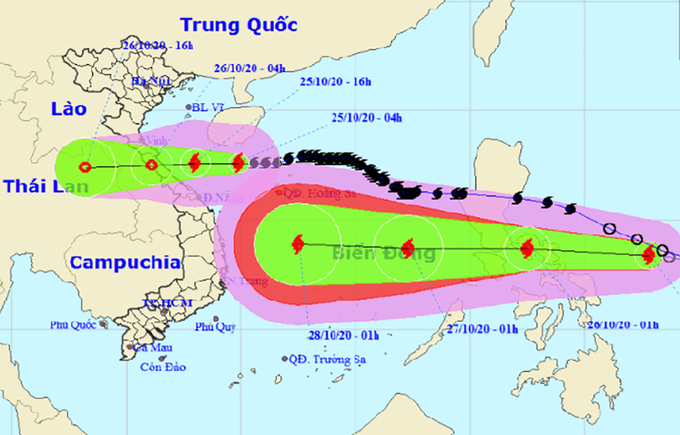

Chủ nhật, 25/10/2020, 08:05 (GMT+7)
Bão Saudel giảm cấp, bão Molave khả năng mạnh lên
Tâm bão Saudel cách đất liền các tỉnh Hà Tĩnh, Quảng Bình, Quảng Trị 330 km, sức gió 90 km/h, sáng 25/10. Theo Trung tâm dự báo khí tượng thủy văn quốc gia, sau khi vượt qua quần đảo Hoàng Sa, bão Saudel tiếp tục di chuyển chậm, giảm một cấp (hiện cấp 9) so với chiều qua do chịu tác động của không khí lạnh khô, nhiệt độ nước biển thấp. Trong 24 giờ tới, bão di chuyển theo hướng Tây, mỗi giờ đi được 15 đến 20 km, đi vào đất liền các tỉnh từ Hà Tĩnh đến Quảng Trị và suy yếu dần thành áp thấp nhiệt đới. Đến 4h ngày 26/10, tâm áp thấp nhiệt đới sẽ trên đất liền các tỉnh từ Hà Tĩnh đến Quảng Trị; sức gió mạnh nhất vùng gần tâm 50 km/h, cấp 6.
Hướng di chuyển của bão Saudel và bão Molave. Ảnh: NCHMF.
Hôm nay, trên vùng biển Vịnh Bắc Bộ, vùng biển từ Quảng Trị đến Thừa Thiên Huế gió mạnh dần lên cấp 6 đến cấp 7, vùng gần tâm bão đi qua cấp 8, sóng biển cao từ 2 đến 4 mét, biển động mạnh. Đài Nhật Bản ghi nhận sáng nay sức gió mạnh nhất gần tâm bão 92 km/h, tiếp tục giảm dần xuống còn 80 km/h vào chiều nay; khi áp sát đất liền các tỉnh Hà Tĩnh, Quảng Bình thì suy yếu thành áp thấp nhiệt đới. Từ nay đến ngày 26/10, ở các tỉnh từ Nghệ An đến Thừa Thiên Huế có mưa vừa, mưa to với tổng lượng mưa phổ biến 50 đến 150 mm mỗi đợt, có nơi trên 200 mm. Hiện, áp thấp nhiệt đới ở phía Đông miền Trung Philippines đã mạnh lên thành bão, với sức gió mạnh nhất 75 km/h, cấp 8, có tên quốc tế là Molave. Trong 24 giờ tới, bão Molave di chuyển theo hướng Tây Tây Bắc, mỗi giờ đi được khoảng 20 km và tiếp tục mạnh thêm. Trung tâm dự báo khí tượng thủy văn quốc gia nhận định, hai ngày tiếp theo bão Molave di chuyển chủ yếu theo hướng Tây, mỗi giờ đi được 20 đến 25 km, đi vào Biển Đông và có khả năng mạnh thêm. Đây là cơn bão thứ 9 vào Biển Đông trong năm nay. Nếu tính cả bão Molave, tháng 10 năm nay có 4 cơn bão, một áp thấp nhiệt đới, bằng tháng 10/1993, tháng nhiều bão và áp thấp nhiệt đới nhất trong chuỗi số liệu ngành khí tượng Việt Nam ghi nhận. Tất cả đều phát triển từ những xoáy thấp trong dải hội tụ nhiệt đới nối từ vịnh Bengal, qua miền Trung, tới vùng biển Philippines.